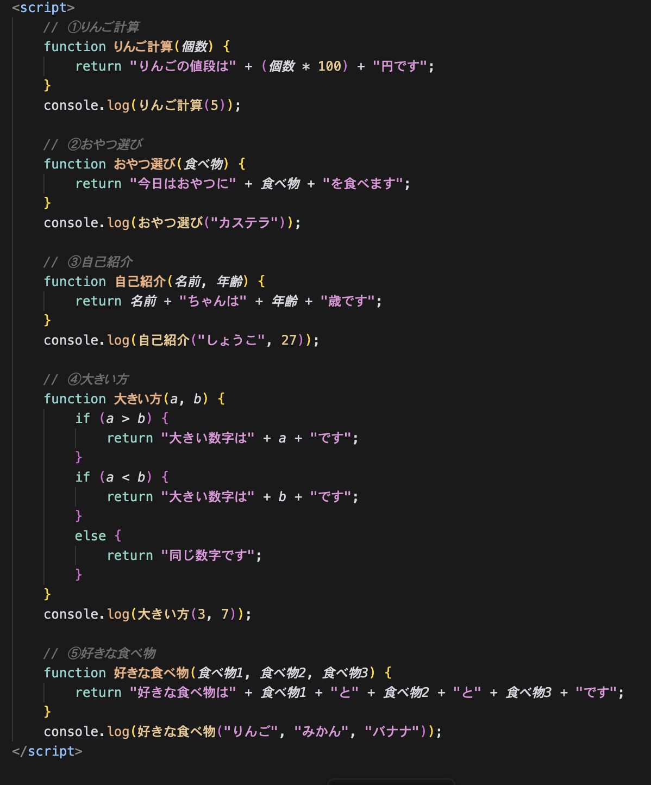
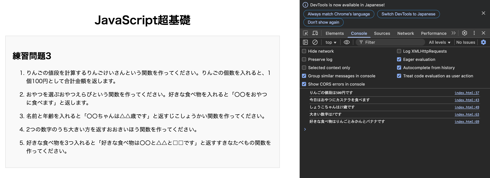

JavaScript超基礎
練習問題3
- りんごの値段を計算するりんごけいさんという関数を作ってください。りんごの個数を入れると、1個100円として合計金額を返します。
- おやつを選ぶおやつえらびという関数を作ってください。好きな食べ物を入れると「〇〇をおやつに食べます」と返します。
- 名前と年齢を入れると「〇〇ちゃんは△△歳です」と返すじこしょうかい関数を作ってください。
- 2つの数字のうち大きい方を返すおおきいほう関数を作ってください。
- 好きな食べ物を3つ入れると「好きな食べ物は〇〇と△△と□□です」と返すすきなたべもの関数を作ってください。
JavaScriptコード

実行結果
